The group
27 people: the PI, 2 postdoctoral fellows and 24 PhD scholars, plus alumni and collaborators.
Dr. Chirodeep Bakli
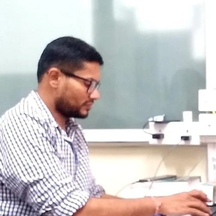
- Chairperson, School of Energy Science & Engineering
- Member, SPARC
- Nodal Officer, New Education Policy (NEP) 2020
My research focuses on multiscale fluid flow and heat transfer with the twin objectives to understand the interfacial interactions and flow physics, and to use them to develop smart surfaces and for renewable energy generation.
Part of the research focuses on length scales below micron dimensions, where one has to resort to molecular-level investigations. The results are used to propose a capillary-height-dependent dynamic slip length that explains the filling behaviour in nanocapillaries. For flow in confinement, the interfacial slip was shown to be a complex function of the physical and chemical signature of the solid surface and of the ionic inclusions in the solvent. In a pioneering work, the duality of wettability and slip length was challenged: flow on a hydrophobic surface was optimised to obtain stick, and methods were proposed to tune surface wettability by altering the structure of the solid and the fluid at the interface.
At the device level, theory and experiments decipher the interdependence between the structure of the electric double layer and the structure of the fluid at the interface under dynamic conditions, a road map for optimising electrokinetic energy conversion. At the system level, the research focuses on wind energy conversion and harvesting solar thermal energy.
- Interfacial phenomena
- Molecular simulation
- Solar and wind energy conversion
- Computational fluid dynamics
- Machine learning
- Associate, West Bengal Academy of Science and Technology
- Outstanding Reviewer 2023
- Faculty Excellence Award
- J C Ghosh Award
- Institute Silver Medal, IIT Kharagpur
Postdocs 2
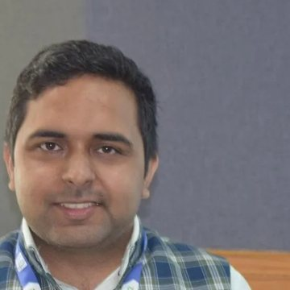
PhD scholars 24
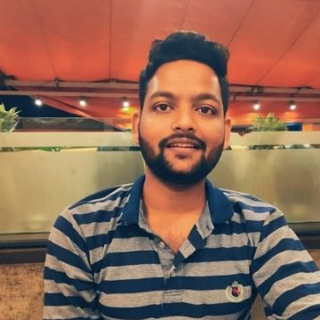
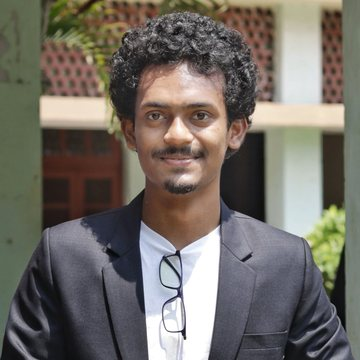
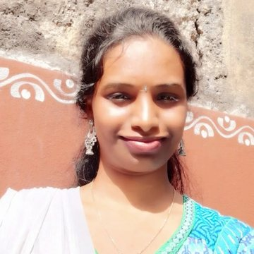
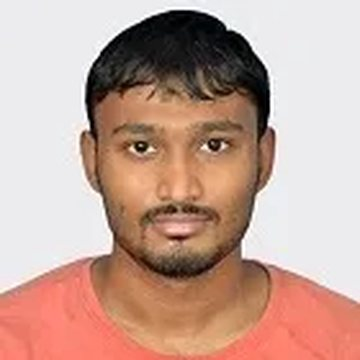
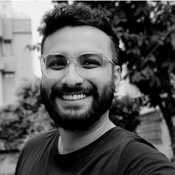
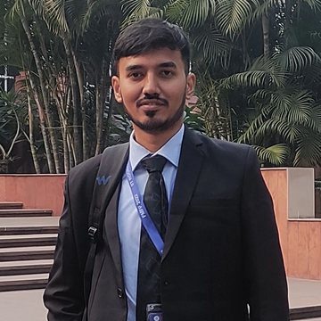
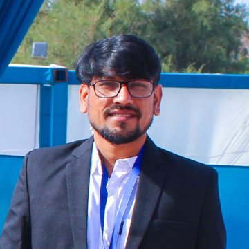
Graduated
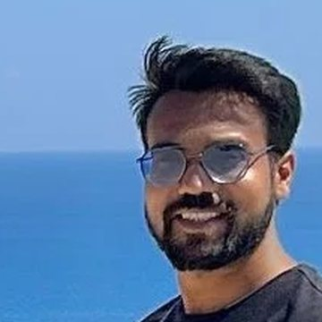
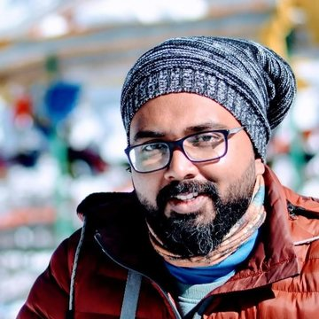
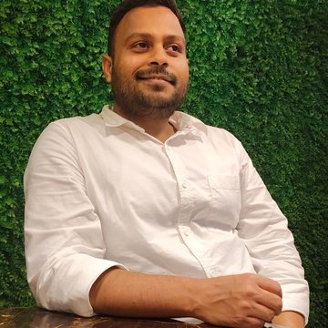
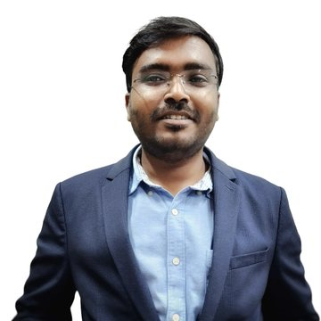
M.Tech.
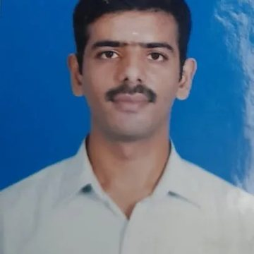
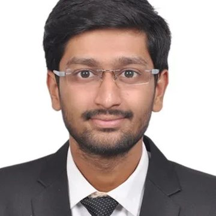
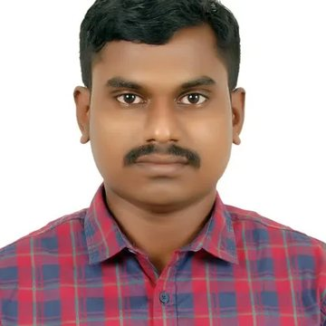
Collaborators
International
- Prof. BoHung KimMNTF Lab, University of Ulsan, Republic of Korea
- Prof. James SprittlesUniversity of Warwick, UK
- Dr. Indrajit ChakrabortyUniversity of Warwick, UK
- Prof. Rohit KarnikMechanical Engineering, Massachusetts Institute of Technology, USA
- Dr. Shivangi SharmaBirmingham Energy Institute, University of Birmingham, UK
National
- Prof. Suman ChakrabortyMechanical Engineering, IIT Kharagpur
- Prof. Rabibrata MukherjeeChemical Engineering, IIT Kharagpur
- Prof. Chandra Sekhar TiwaryMetallurgical and Materials Engineering, IIT Kharagpur
- Prof. Siddhartha MukhopadhyayElectrical Engineering, IIT Kharagpur
- Dr. Titash MondalRubber Technology, IIT Kharagpur
- Dr. Rajaram LakkarajuMechanical Engineering, IIT Kharagpur
- Dr. Prashant AnandArchitecture and Regional Planning, IIT Kharagpur
- Dr. Chandan BeraInstitute of Nano Science and Technology, Mohali
- Dr. Debasis GhoshJain University, Bangalore